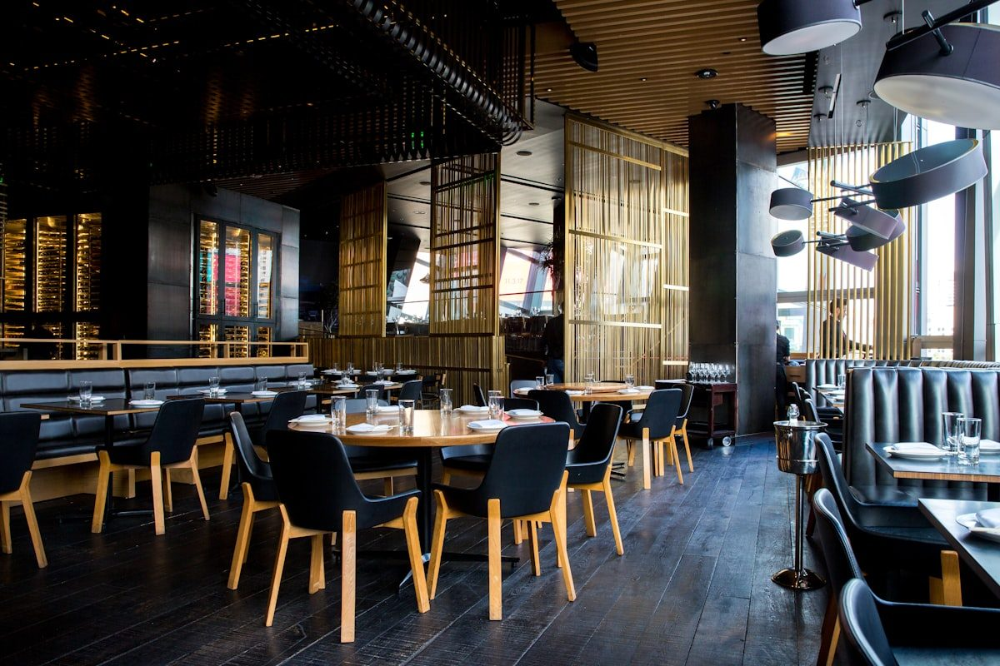

Crafting Dinnerware That Anchors Generations
Born from a passion for communal table hospitality and uncompromising material integrity at 181 Mercer Street.
The Philosophy of the Shared Platter
In an increasingly fragmented world, the evening dinner table stands as one of the last remaining sanctuaries for true human presence. When courses are plated on an expansive, beautifully balanced central platter rather than individual pre-portioned dishes, diners instinctively lean forward, interact, and engage in the ritual of offering and receiving food.
Founded by culinary artisans and industrial ceramicists, SupperPlatter set out to solve the common frustrations of banquet-sized dinnerware: fragile earthenware that chips under carving knives, awkward profiles that tip when lifted, and cold surfaces that chill delicate sauces before the first portion is served.
Every piece we fire represents our dedication to thermal mass retention, food-grade mineral vitrification, and timeless dining room ergonomics.

Engineered For Decades of Conviviality
Explore how our stoneware and end-grain timber lines are manufactured to museum-grade specifications.

High-Vitrification Stoneware
Fired at cone 10 temperatures exceeding 2,340°F, completely closing open pores to ensure 0.1% water absorption and unmatched resistance to knife scratching.

Sustainably Harvested Walnut
Sourced from certified northeastern American hardwood groves, end-grain configured to protect cutlery edges and heal naturally after slicing roasted roasts.

Mercer Atelier Studio
Our SoHo workshop combines historic hand-throwing traditions with modern laser profile balancing to ensure every platter sits dead flat upon the table.